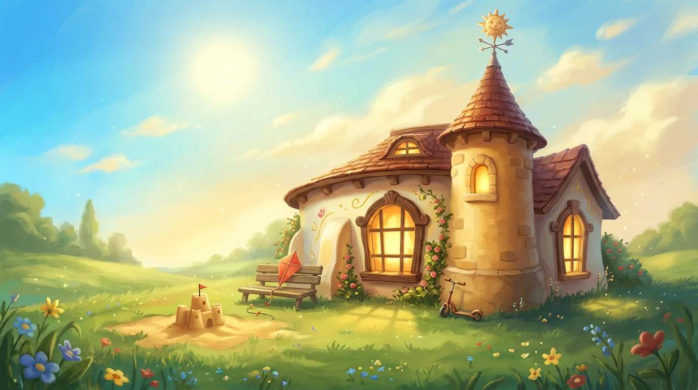
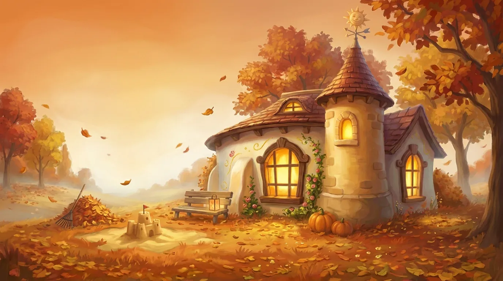
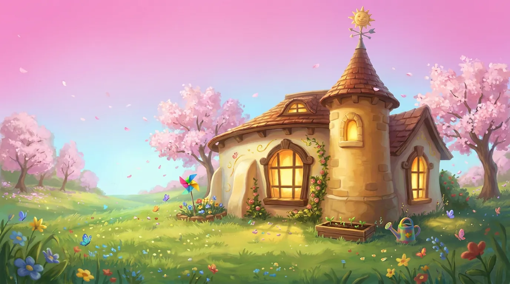
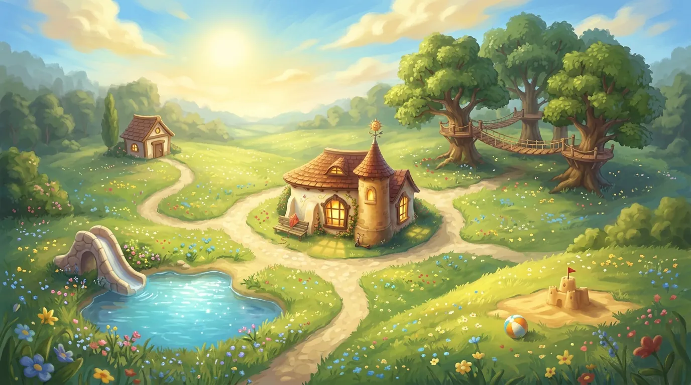
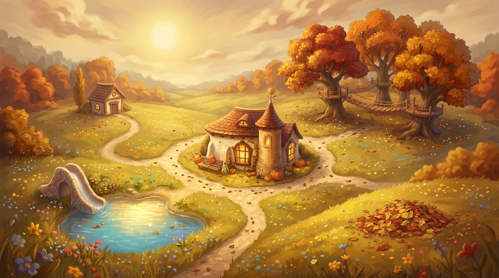
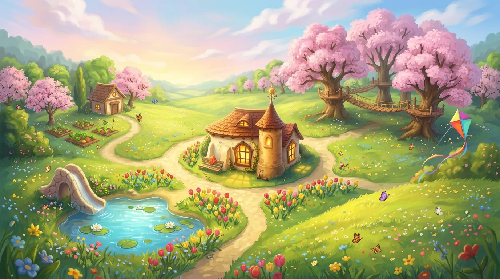
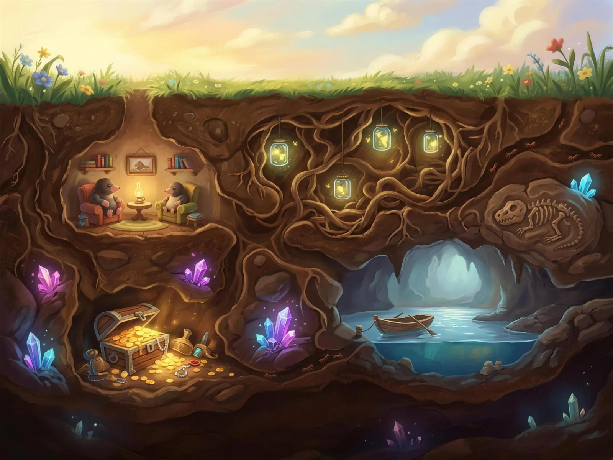
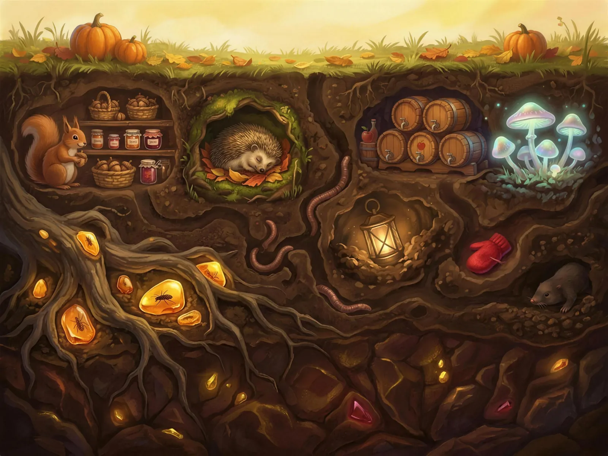
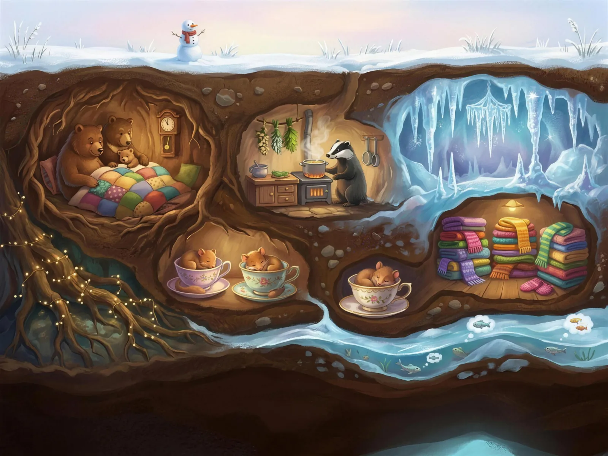
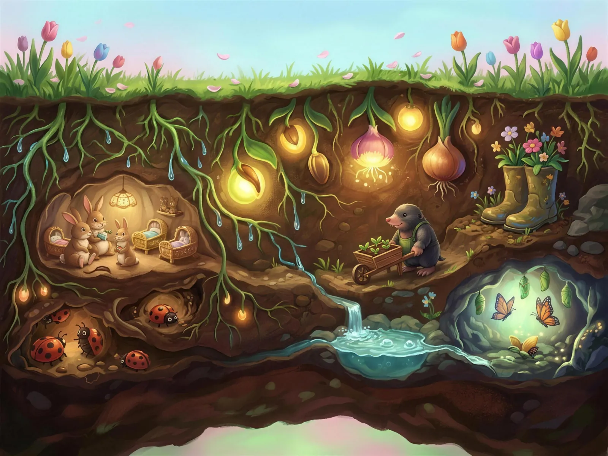

One magical place. Four seasons of play.
Wonderyear is a play centre that's open all year round – the same beloved place, four different worlds.
Sunshine, water and wide-open laughter.
Tap around – every corner changes with the seasons.



The gentle rhythm of a child's day – from the first hello to the goodbye song.
In their own words – from the grown-ups who bring them.
We're open every day, all year round – rain, shine, snow or blossom.



